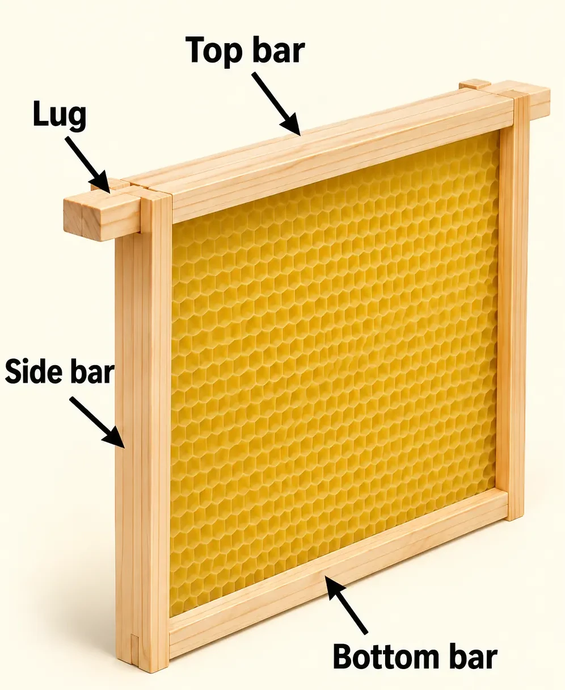
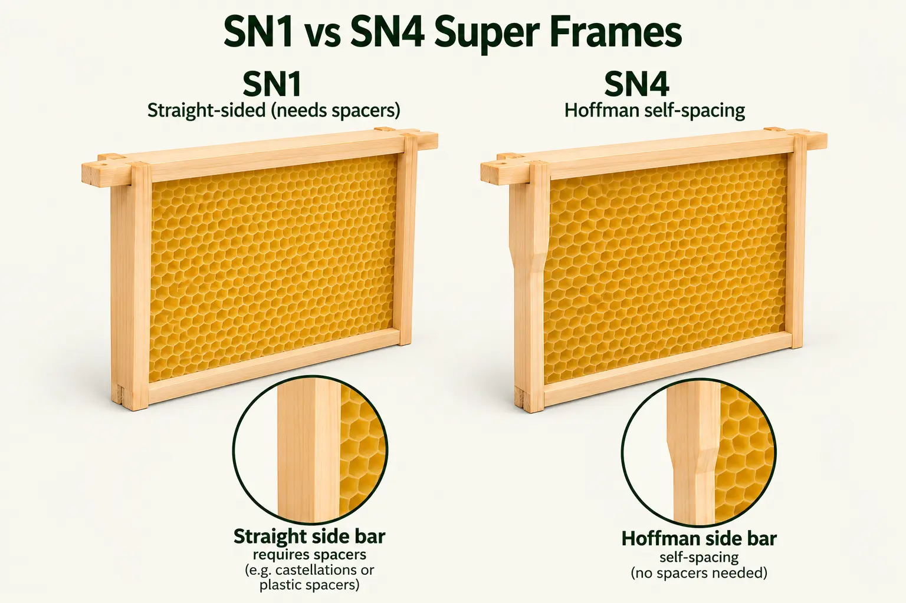
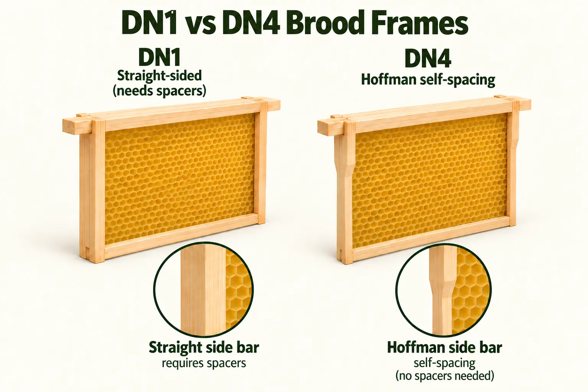
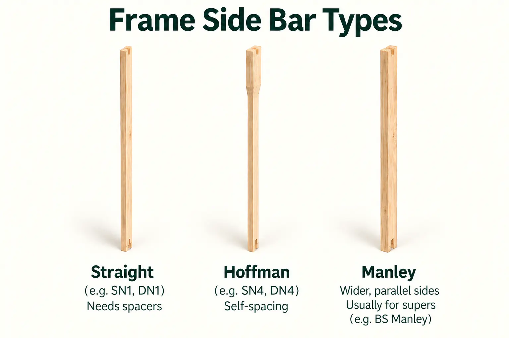
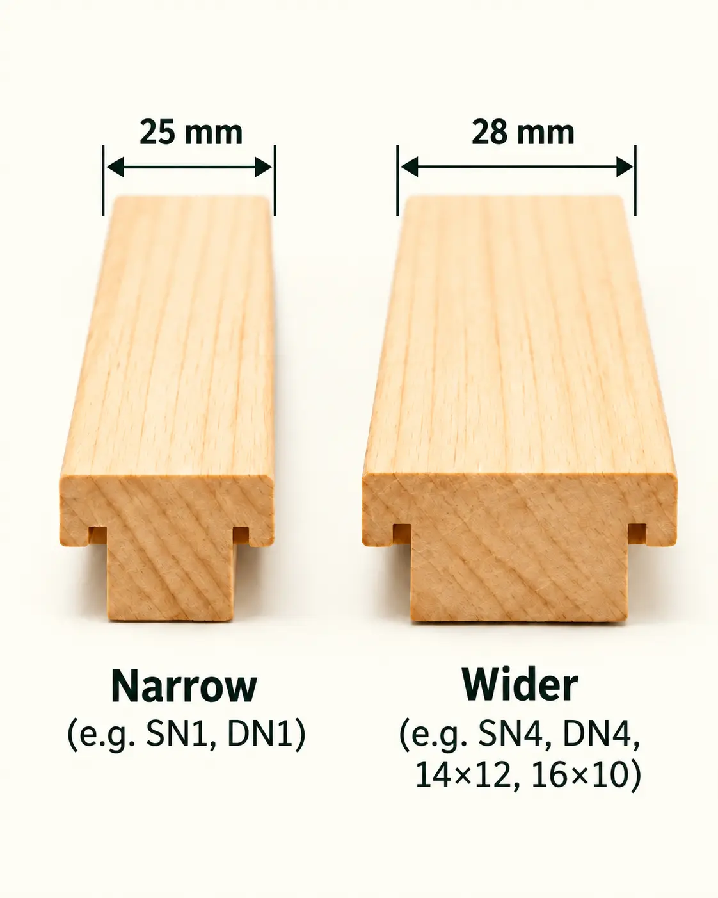
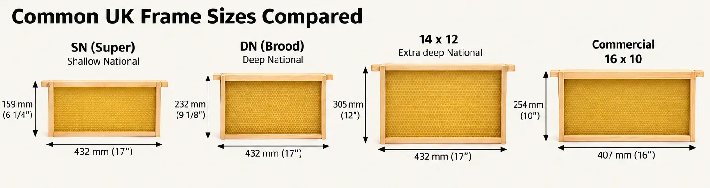

Last updated: 26 September 2026

Beehive Frames Can Look More Complicated Than They Really Are
If you are new to beekeeping in the UK, buying frames can be surprisingly confusing. Open a catalogue and you may see SN1, SN2, SN4, SN5, DN1, DN2, DN4, DN5, Hoffman, Manley, 14×12, Commercial, Smith and different grades of timber.
The important thing is that these terms are not all describing the same feature. Some tell you the size of the frame, some describe the shape of the side bars, some tell you how the frames are spaced, and others describe the quality of the timber.
This guide is written for the UK market and focuses on the frame types most likely to be encountered by beekeepers using British National, WBC, 14×12 National, Commercial, Smith, Langstroth and Dadant equipment. If you are just getting started, you may also find our Getting Started with Beekeeping guides and Starting Your Own Beehive article useful.
The Parts of a Beehive Frame

A conventional wooden frame is made from a few simple components. The top bar spans the width of the frame and extends at each end to form the lugs. These lugs rest on the runners or rebates inside the hive box. Two side bars determine the depth and spacing style of the frame, while one or two bottom bars complete the lower edge.
Once you understand those parts, most frame names become much easier to decode. The side bars tell you whether a frame is straight-sided, Hoffman or Manley; the depth tells you whether it belongs in a brood box or a super; and the top bar width distinguishes some of the numbered British Standard variants.
Start with the Hive: Frames Are Not Universal
The first question is not “SN1 or SN4?” It is which hive system are you using?
Common hive types found in the UK include the British National, WBC, 14×12 National, Commercial, Smith, Langstroth and Dadant. Frames from these systems should not be assumed to be interchangeable simply because they look similar.
Do not use “Hoffman” as a size
Hoffman describes a self-spacing side-bar design, not a frame dimension. A National DN4, Commercial Deep and Langstroth Deep can all have Hoffman side bars while still being completely different-sized frames.
For many UK beginners the relevant system is British Standard, used by standard National and WBC hives. That is where the familiar SN and DN codes come from.
What Do SN and DN Mean?
The letters are the easiest part of the British Standard frame code:
- SN = Shallow National — the shallow frames normally used in honey supers.
- DN = Deep National — the deeper frames used in a standard brood box.
So an SN4 is a shallow super frame, while a DN4 is a brood frame. The number tells you about the top bar and side-bar arrangement; it does not indicate the depth.
| Frame | Typical use | Side bars | Top bar | Separate spacing? |
|---|---|---|---|---|
| SN1 | National/WBC super | Straight | Narrow | Yes |
| SN2 | National/WBC super | Straight | Wide | Yes |
| SN4 | National/WBC super | Hoffman | Narrow | No |
| SN5 | National/WBC super | Hoffman | Wide | No |
| DN1 | National/WBC brood | Straight | Narrow | Yes |
| DN2 | National/WBC brood | Straight | Wide | Yes |
| DN4 | National/WBC brood | Hoffman | Narrow | No |
| DN5 | National/WBC brood | Hoffman | Wide | No |
SN1 vs SN4 Super Frames

SN1 and SN4 are both shallow British Standard frames designed for National or WBC supers. The difference is how they are spaced.
SN1: straight-sided and separately spaced
An SN1 has a narrow top bar and straight side bars. The side bars do not establish the distance between neighbouring frames, so the beekeeper must use a separate spacing system such as plastic or metal frame ends, or castellated spacers.
SN1 frames are popular in honey supers because castellations let the beekeeper choose a fixed number of frame positions. Once comb is drawn straight, using fewer, more widely spaced frames encourages the bees to extend the honey cells further beyond the frame. This can produce thicker comb and can make knife uncapping easier.
SN4: Hoffman self-spacing
An SN4 has the same shallow function but uses Hoffman side bars. Their wider shoulders touch neighbouring frames and automatically establish the spacing, so separate plastic spacers or castellations are not required for normal spacing.
Neither system is inherently “better”. SN4 is convenient and flexible during manipulation; SN1 is useful when you deliberately want fixed super spacing.
DN1 vs DN4 Brood Frames

The same distinction appears in the brood box.
DN1 is a British Standard deep brood frame with a narrow top bar and straight side bars. It needs a separate method of spacing.
DN4 is the corresponding deep brood frame with a narrow top bar and Hoffman self-spacing side bars. It is one of the most commonly encountered frames in a standard National brood box because the frames can be pushed together and the Hoffman shoulders establish the spacing automatically.
A standard National brood box is commonly run with eleven DN frames and a dummy board, although individual equipment and management choices vary.
What Does Hoffman Mean?
A Hoffman frame has side bars that are wider near the top and narrower further down. When adjacent frames are pushed together, the wider sections touch and provide the spacing between the combs.
This matters because colonies need usable bee space between comb surfaces. Too little space restricts movement; too much can encourage brace or burr comb.
Hoffman is therefore a spacing system, not a hive size. Hoffman side bars are found on National, Commercial, Langstroth, Dadant and other frames.
Frame Side-Bar Types: Straight, Hoffman and Manley

Straight side bars
Straight side bars do not space themselves. British Standard examples include SN1, SN2, DN1 and DN2. They need another form of spacing.
Hoffman side bars
Hoffman side bars are wider at the upper shoulder and taper lower down. They are self-spacing. British Standard examples include SN4, SN5, DN4 and DN5.
Manley side bars
Manley frames are principally a super-frame design. Their side bars are broad and substantially parallel rather than tapering like a Hoffman. The broad side bars and wider bottom support are intended to encourage deeper honey comb and provide a firm surface when uncapping. British Standard Manley frames are shallow-only equipment for National/WBC supers; Manley versions also exist for some other hive systems.
What Do the Numbers 1, 2, 4 and 5 Mean?
Once the SN or DN depth is known, the number identifies the combination of top bar and side-bar style:
- 1 — narrow top bar + straight side bars.
- 2 — wider top bar + straight side bars.
- 4 — narrow top bar + Hoffman side bars.
- 5 — wider top bar + Hoffman side bars.
For British Standard frames, a common narrow top bar is about 7/8 in (22 mm), while the wider top bar is about 1 1/16 in (27 mm). The wider bar is used partly to reduce the amount of brace comb that can be built between adjacent top bars.

Why Do Some Frames Need Spacers?
Frames need to sit at a controlled distance from one another. With Hoffman frames, the wooden frame establishes that distance. With straight-sided frames, something else has to do it.
Plastic or metal frame ends
Small spacers can be fitted to straight-sided frames so that each one sits the required distance from the next.
Castellated spacers
Castellations are metal strips containing fixed slots. The frame lugs or ends sit in those positions, holding every frame at a predetermined spacing. They are especially common in honey supers using SN1 frames.
Frame runners
Runners sit along the hive rebate and provide a surface for the frame lugs to rest on. They are not the same thing as castellations. Hoffman frames can rest on ordinary runners and use their side bars for spacing.
Why Use Fewer Frames in a Honey Super?
A brood nest benefits from consistent comb spacing, but a honey super has a different job. Once the bees have drawn straight comb, a beekeeper can use wider spacing so the bees build the honey cells further out from the centre line of the frame.
This produces fewer but thicker combs. That can mean fewer frames to remove and uncap, and the cappings may stand further proud of the wooden frame, which can make uncapping easier.
Important
Wider super spacing works best with already straight, drawn comb. Giving bees undrawn foundation too much freedom can increase the risk of uneven comb.
What Is a 14×12 Frame?
A 14×12 is an extra-deep brood frame used in a 14×12 National or WBC brood box. It retains the familiar British Standard top-bar arrangement but has much deeper side bars than a standard DN frame.
The attraction is brood area. A 14×12 gives the queen considerably more room in a single brood box and can reduce the need to run brood-and-a-half or double brood.
The trade-off is weight and handling. A 14×12 frame containing brood, bees and stores can be noticeably heavier than a standard DN frame.
A standard National brood box does not take 14×12 frames
You need a purpose-made extra-deep 14×12 brood box. However, the external footprint remains compatible with National equipment, so ordinary National supers can still be used above it.
Commercial Frames
The British Commercial hive is a separate hive system. Its brood frame is commonly referred to as 16×10. Commercial deep frames use their own dimensions and are not interchangeable with DN4 frames.
Commercial brood frames can use Hoffman self-spacing side bars, which is why simply seeing the word “Hoffman” is not enough to identify the frame.
One useful feature of the UK Commercial system is that the hive footprint is compatible with National-sized boxes. Some beekeepers therefore run a Commercial brood box with National supers. The boxes can stack, but the frames inside them remain different.
Common UK Frame Sizes Compared
The main formats a UK beekeeper is likely to encounter include British Standard shallow (SN), British Standard deep (DN), 14×12, Commercial, Smith, Langstroth and Dadant.
For a useful comparison, think of them by hive system and depth rather than treating names such as Hoffman as separate sizes.

| Hive or box | Typical frame | Notes |
|---|---|---|
| National standard brood | DN1, DN2, DN4 or DN5 | DN4 is a very common Hoffman choice. |
| National super | SN1, SN2, SN4, SN5 or BS Manley | SN1 often used with castellations; SN4 self-spaces. |
| WBC standard brood | British Standard DN | Same internal BS frame family as National. |
| WBC super | British Standard SN | Same internal BS frame family as National. |
| 14×12 brood | 14×12 | Requires extra-deep brood box. |
| Smith | Smith/short-lug BS-style frame | Similar comb area, shorter lugs. |
| Commercial brood | Commercial Deep / 16×10 | Separate frame size; commonly Hoffman. |
| Commercial super | Commercial Shallow / 16×6 or Manley | Separate Commercial frame family. |
| Langstroth | Corresponding Langstroth depth | Do not confuse Langstroth Hoffman with National Hoffman. |
| Dadant | Corresponding Dadant frame | Separate system and dimensions. |
National and WBC: Do They Use the Same Frames?
For standard-depth equipment, yes. British National and WBC hives use the same British Standard frame family internally:
- National brood box → DN frames
- WBC brood box → DN frames
- National super → SN frames
- WBC super → SN frames
The hive bodies are very different — especially because a WBC uses outer lifts — but the standard internal frame format is shared.
What About Smith Hives?
Smith frames are closely related to British Standard frames in comb area but have shorter top-bar lugs. That means a frame that looks almost identical may not hang correctly in the other hive.
When buying for a Smith hive, check that the frame is specifically sold for Smith equipment rather than relying only on the words “deep”, “shallow” or “Hoffman”.
What About Langstroth and Dadant Frames?
Langstroth and Dadant are separate frame systems used internationally and by some UK beekeepers. Both can be sold with Hoffman side bars.
A Langstroth Deep Hoffman and a National DN4 Hoffman are therefore both self-spacing frames, but they are not the same dimensions and should not be treated as interchangeable.
What Does A-Grade Mean?
You may see wooden frames described as A-grade, first quality, premium, second quality, seconds or budget.
This is a supplier description of the timber quality and finish, not another British Standard frame code. Higher grades are generally selected for cleaner timber and fewer knots or defects; lower-cost seconds may contain an occasional knot or minor cosmetic fault while still being usable.
So an A-grade DN4 and a second-quality DN4 should still be the same DN4 specification. The difference is the grade of the timber, not the hive it fits.
Because grading terminology is not a universal BS code, read the individual supplier's definition rather than assuming every company uses “A-grade” in exactly the same way.
Frames and Foundation Are Different Things
This is one of the easiest purchasing mistakes to make.
A listing such as “A-grade DN4 Hoffman frame with wired foundation” contains several separate pieces of information:
- A-grade — timber-quality description.
- DN4 — British Standard deep brood-frame specification.
- Hoffman — self-spacing side bars.
- Wired foundation — the type of sheet fitted inside the wooden frame.
Foundation deserves its own explanation because it introduces another set of choices: wired or unwired, vertical or diagonal wire, beeswax or plastic, worker or drone cell, thin cut-comb foundation, coloured foundation and foundationless systems.
Companion guide: we will link the separate Beehive Foundation Explained article here when it is published.
What Should I Buy for a Standard National Hive?
For a conventional British National hive, a very common starting combination is:
Brood box
DN4 Hoffman frames — standard National brood depth and self-spacing.
Honey supers
Either SN4 Hoffman frames for simple self-spacing, or SN1 frames with castellated spacers if you want more control over honey-comb spacing.
This is not the only valid arrangement, but it is a useful reference point for somebody looking at a supplier catalogue for the first time.
If you are choosing your first hive or comparing equipment before buying bees, see What I Wish I Knew Before Buying My First Bees and the wider BeezKnees Beekeeping Guides.
A Simple Way to Decode Any Frame Description
- Identify the hive system. National, WBC, Smith, Commercial, Langstroth, Dadant or something else?
- Identify the depth. Brood or super? In British Standard equipment, DN means Deep National and SN means Shallow National.
- Check the side bars. Straight-sided frames need separate spacing; Hoffman frames are self-spacing.
- Check the top bar. British Standard frame numbers distinguish narrow and wider top-bar versions.
- Check the timber grade. A-grade or seconds describes quality, not compatibility.
- Then choose the matching foundation. Foundation type is a separate decision from the wooden frame.
The Short Version
If you remember only a few things, remember these:
- DN4 = standard National/WBC brood frame with narrow top bar and Hoffman self-spacing side bars.
- SN4 = National/WBC super frame with narrow top bar and Hoffman self-spacing side bars.
- SN1 = National/WBC super frame with straight side bars that needs a separate spacing system.
- 14×12 = extra-deep brood frame requiring a 14×12 brood box.
- Commercial = a separate frame system, even when the frame uses Hoffman spacing.
- Hoffman = a side-bar/spacing design, not a hive size.
- A-grade = timber quality, not another frame code.
Once those distinctions are clear, the long lists of frame codes in UK beekeeping catalogues become much easier to understand.
Frequently Asked Questions
Both are British Standard shallow super frames. SN1 has straight side bars and needs a separate spacing system, while SN4 has Hoffman side bars and is self-spacing.
A DN4 is a British Standard deep brood frame with a narrow top bar and Hoffman self-spacing side bars. It is commonly used in standard National and WBC brood boxes.
Hoffman describes self-spacing side bars. The bars are wider near the top so adjacent frames touch at the shoulders and maintain their spacing automatically.
No. A 14×12 frame requires an extra-deep 14×12 brood box. Standard National supers can still be used above it.
Standard National and WBC hives both use British Standard DN frames in the brood box and SN frames in the supers, although the hive bodies themselves are different.
A-grade normally describes the supplier's timber quality or finish. It does not change the DN, SN, Hoffman or other dimensional frame specification.
Join the Conversation
Beekeeping is all about learning from one another. Follow BeezKnees for more practical UK beekeeping guides, seasonal observations and equipment explainers.
Follow the BeezKnees Facebook Page